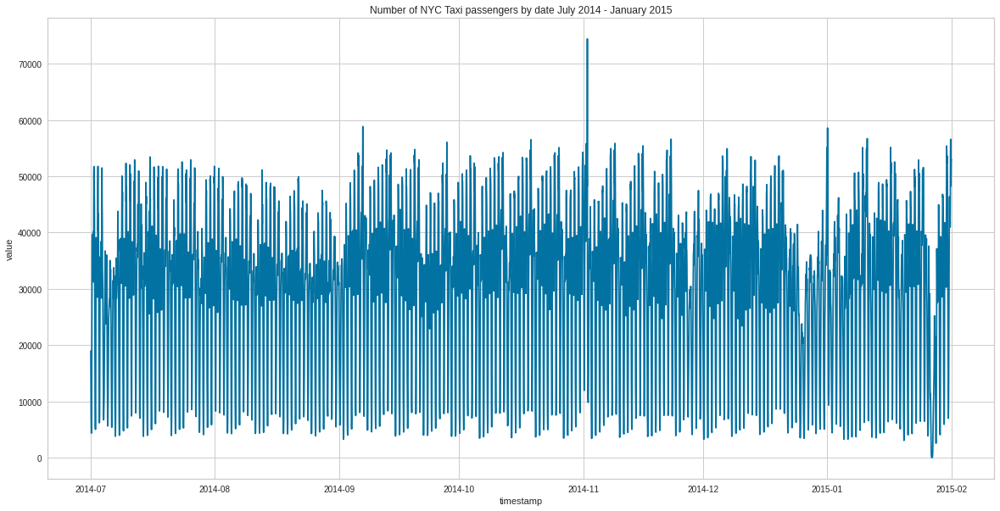
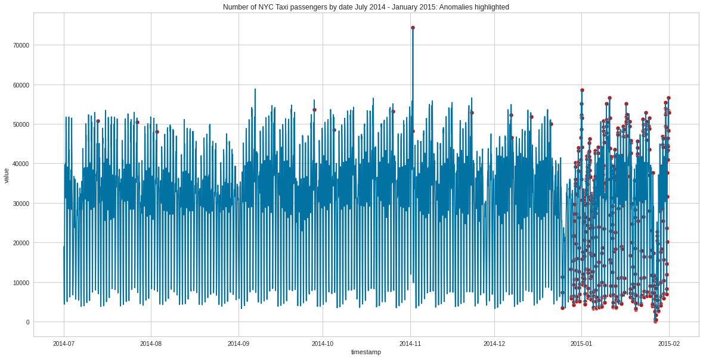
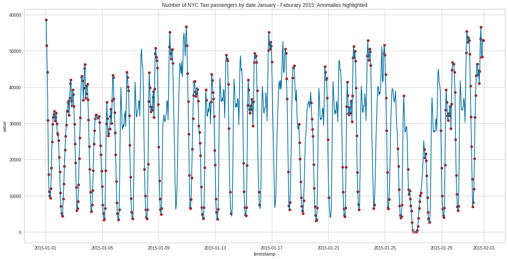

Python Power Tools for Data Science - Pycaret Anomaly Detection
In Python Power Tools for Data Science articles I look at python tools that help automate or simplify common tasks a Data Scientist would need to perform. In this article I look at the Pycaret Anomaly Detection module and see how this can help automate this process.
python-power-tools
pycaret
Author
Pranath Fernando
Published
January 2, 2022
1 Python Power Tools for Data Science
In this series of articles Python Power Tools for Data Science I will be looking at a series of python tools that can make a significant improvement on common Data Science tasks. In particular, Python Power Tools are python tools that can significantly automate or simplify common tasks a Data Scientist would need to perform.
Automation and simplifcation of common tasks can bring many benefits such as:
Less time needed to complete tasks
Reduction of mistakes due to less complex code
Improved readability and understanding of code
Increased consistancy of approach to different problems
Easier reproducability, verification, and comparison of results
2 Pycaret Anomaly Detection Module
Pycaret is a low code python library that aims to automate many tasks required for machine learning. Tasks that would usually take hundreds of lines of code can often be replaced with just a couple of lines. It was inspired by the Caret library in R.
In comparison with the other open-source machine learning libraries, PyCaret is an alternate low-code library that can be used to replace hundreds of lines of code with few words only. This makes experiments exponentially fast and efficient. PyCaret is essentially a Python wrapper around several machine learning libraries and frameworks such as scikit-learn, XGBoost, LightGBM, CatBoost, spaCy, Optuna, Hyperopt, Ray, and many more. (Pycaret Documentation)
Pycaret has different modules specialised for different machine learning use-cases these include:
In this article we will use the Anomaly Detection Module of Pycaret which is an unsupervised machine learning module that is used for identifying rare items, events, or observations. It has over 13 algorithms and plots to analyze the results, plus many other features.
# Download tax passenger datadata = pd.read_csv('https://raw.githubusercontent.com/numenta/NAB/master/data/realKnownCause/nyc_taxi.csv')data['timestamp'] = pd.to_datetime(data['timestamp'])# Show first few rowsdata.head()
timestamp
value
0
2014-07-01 00:00:00
10844
1
2014-07-01 00:30:00
8127
2
2014-07-01 01:00:00
6210
3
2014-07-01 01:30:00
4656
4
2014-07-01 02:00:00
3820
# Show last few rowsdata.tail()
timestamp
value
10315
2015-01-31 21:30:00
24670
10316
2015-01-31 22:00:00
25721
10317
2015-01-31 22:30:00
27309
10318
2015-01-31 23:00:00
26591
10319
2015-01-31 23:30:00
26288
# Plot dataset plt.figure(figsize=(20,10))sns.lineplot(x ="timestamp", y ="value", data=data)plt.title('Number of NYC Taxi passengers by date July 2014 - January 2015')plt.show()

So we can’t directly use timestamp data for anomaly detection models, we need to convert this data into other features such as day, year, hour etc before we can use it - so lets do this.
# Set timestamp to indexdata.set_index('timestamp', drop=True, inplace=True)# Resample timeseries to hourly data = data.resample('H').sum()# Create more features from datedata['day'] = [i.day for i in data.index]data['day_name'] = [i.day_name() for i in data.index]data['day_of_year'] = [i.dayofyear for i in data.index]data['week_of_year'] = [i.weekofyear for i in data.index]data['hour'] = [i.hour for i in data.index]data['is_weekday'] = [i.isoweekday() for i in data.index]data.head()
value
day
day_name
day_of_year
week_of_year
hour
is_weekday
timestamp
2014-07-01 00:00:00
18971
1
Tuesday
182
27
0
2
2014-07-01 01:00:00
10866
1
Tuesday
182
27
1
2
2014-07-01 02:00:00
6693
1
Tuesday
182
27
2
2
2014-07-01 03:00:00
4433
1
Tuesday
182
27
3
2
2014-07-01 04:00:00
4379
1
Tuesday
182
27
4
2
4 Pycaret workflow
4.1 Setup
The Pycaret setup() is the first part of the workflow that always needs to be performed, and is a function that takes our data in the form of a pandas dataframe and performs a number of tasks to get reading for the machine learning pipeline.
Power transforms (default: false) will transform to make data more gaussian options include yeo-johnson, quantile
PCA: Principal components analysis (default: false) reduce the dimensionality of the data down to a specified number of components
4.2 Selecting and training a model
At time of writing this article, there are 12 different anomaly detection models available within Pycaret, which we can display with the models() function.
# Check list of available modelsmodels()
Name
Reference
ID
abod
Angle-base Outlier Detection
pyod.models.abod.ABOD
cluster
Clustering-Based Local Outlier
pyod.models.cblof.CBLOF
cof
Connectivity-Based Local Outlier
pyod.models.cof.COF
iforest
Isolation Forest
pyod.models.iforest.IForest
histogram
Histogram-based Outlier Detection
pyod.models.hbos.HBOS
knn
K-Nearest Neighbors Detector
pyod.models.knn.KNN
lof
Local Outlier Factor
pyod.models.lof.LOF
svm
One-class SVM detector
pyod.models.ocsvm.OCSVM
pca
Principal Component Analysis
pyod.models.pca.PCA
mcd
Minimum Covariance Determinant
pyod.models.mcd.MCD
sod
Subspace Outlier Detection
pyod.models.sod.SOD
sos
Stochastic Outlier Selection
pyod.models.sos.SOS
We will choose to use the Isolation Forrest model. Isolation Forrest is similar to Random Forrest in that it’s an algorithm based on multiple descison trees, however rather than aiming to model normal data points - Isolation Forrest explictly tries to identify anomalous data points.
There are many configuration hyperparameters for this model, which can be seen when we create and print the model details as we see below.
# Create model and print configuration hyper-parametersiforest = create_model('iforest')print(iforest)
One of the key configuration options is contamination which is the proportion of outliers we are saying is in the data set. This is used when fitting the model to define the threshold on the scores of the samples. This is set by default to be 5% i.e. 0.05.
We will now train and assign the model to the dataset.
# Train and assign model to datasetiforest_results = assign_model(iforest)iforest_results.head()
value
day
day_name
day_of_year
week_of_year
hour
is_weekday
Anomaly
Anomaly_Score
timestamp
2014-07-01 00:00:00
18971
1
Tuesday
182
27
0
2
0
-0.015450
2014-07-01 01:00:00
10866
1
Tuesday
182
27
1
2
0
-0.006367
2014-07-01 02:00:00
6693
1
Tuesday
182
27
2
2
0
-0.010988
2014-07-01 03:00:00
4433
1
Tuesday
182
27
3
2
0
-0.017091
2014-07-01 04:00:00
4379
1
Tuesday
182
27
4
2
0
-0.017006
This adds 2 new columns to the dataset, an Anomaly column which gives a binary value if a datapoint is considered an anomaly or not, and a Anomaly_Score column which has a float value as a measure of how anomalous a datapoint is.
4.3 Model Evaluation
So lets now evaluate our model by examining the datapoints the model has labelled as anomalies.
# Show dates for first few anomaliesiforest_results[iforest_results['Anomaly'] ==1].head()
value
day
day_name
day_of_year
week_of_year
hour
is_weekday
Anomaly
Anomaly_Score
timestamp
2014-07-13
50825
13
Sunday
194
28
0
7
1
0.002663
2014-07-27
50407
27
Sunday
208
30
0
7
1
0.009264
2014-08-03
48081
3
Sunday
215
31
0
7
1
0.003045
2014-09-28
53589
28
Sunday
271
39
0
7
1
0.004440
2014-10-05
48472
5
Sunday
278
40
0
7
1
0.000325
# Plot data with anomalies highlighted in redfig, ax = plt.subplots(figsize=(20,10))# Create list of outlier_datesoutliers = iforest_results[iforest_results['Anomaly'] ==1]p1 = sns.scatterplot(data=outliers, x = outliers.index, y ="value", ax=ax, color='r')p2 = sns.lineplot(x = iforest_results.index, y ="value", data=iforest_results, color='b', ax=ax)plt.title('Number of NYC Taxi passengers by date July 2014 - January 2015: Anomalies highlighted')plt.show()

So we can see the model has labelled a few isolated points as anomalies between 2014-7 and the end of 2014. However near the end of 2014 and the start of 2015, we can see a huge number of anomalies, in particular for all of January 2015.
Let’s focus in on the period from January 2015.
# Plot data with anomalies highlighted in redfig, ax = plt.subplots(figsize=(20,10))# Focus on dates after Jan 2015focus = iforest_results[iforest_results.index >'2015-01-01']# Create list of outlier_datesoutliers = focus[focus['Anomaly'] ==1]p1 = sns.scatterplot(data=outliers, x = outliers.index, y ="value", ax=ax, color='r')p2 = sns.lineplot(x = focus.index, y ="value", data=focus, color='b', ax=ax)plt.title('Number of NYC Taxi passengers by date January - Feburary 2015: Anomalies highlighted')plt.show()

So the model seems to be indicating that for all of Janurary 2015 we had a large number of highly unusual passenger number patterns. What might have been going on here?
The January 2015 North American blizzard was a powerful and severe blizzard that dumped up to 3 feet (910 mm) of snowfall in parts of New England. Originating from a disturbance just off the coast of the Northwestern United States on January 23, it initially produced a light swath of snow as it traveled southeastwards into the Midwest as an Alberta clipper on January 24–25. It gradually weakened as it moved eastwards towards the Atlantic Ocean, however, a new dominant low formed off the East Coast of the United States late on January 26, and rapidly deepened as it moved northeastwards towards southeastern New England, producing pronounced blizzard conditions.
Time lapsed satellite images from the period reveals the severe weather patterns that occured.
Some photos from the New York area at the time of the Blizzard.
So our model seems to have been able to detect very well this highly unusual pattern in taxi passenger behaviour caused by this Blizzard event.
With very little code, this module has helped us detect a well documented anomaly event even just using the default configuration.
Some key advantages of using this are:
Quick and easy to use with little code, default parameters can work well
The model library is kept up to date with the latest anomaly detection models, which can help make it easier to consider a range of different models quickly
Despite being simple and easy to use, the library has many configuration options, as well as extra funcationality such as data pre-processing, data visualisation tools, and the ability to load and save models together with the data pipleine easily
Certrainly from this example, we can see that the Pycaret Anomaly detection module seems a great candidate as a Python Power Tool for Data Science.